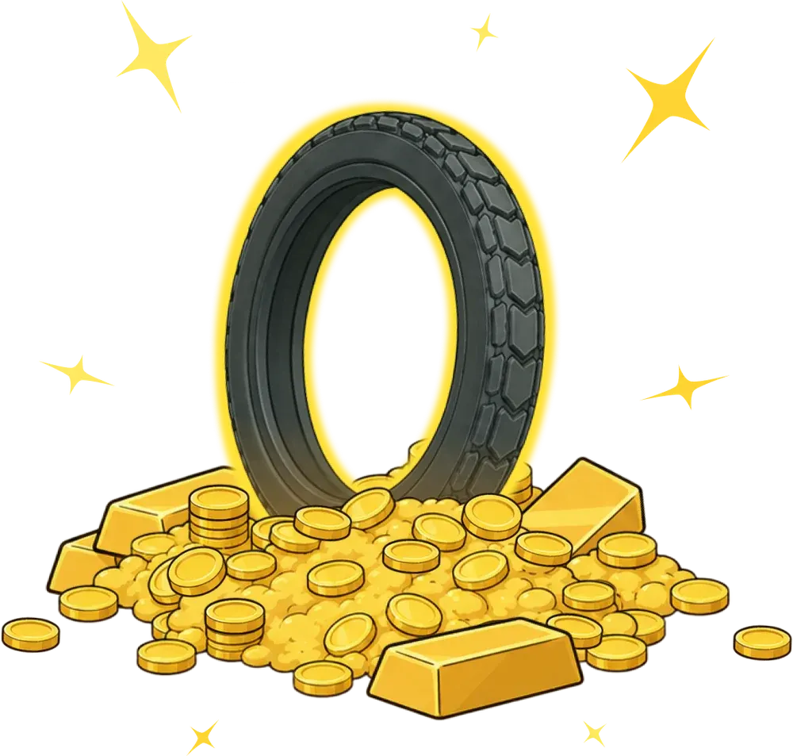

Data & RTP
Wheel Out Volatility: What a 10,000x Ceiling Really Costs
A published max win of 10,000x has to be paid for out of the same RTP as everything else. Here is which part of the paytable funds it, and how that feels over an evening.
🔞 18+ only · Real-money gambling

Wheel Out advertises a maximum win of 10,000× and a 97% RTP. Both figures are true at once, and the way they fit together tells you almost everything about how a session will feel.
Where the ceiling comes from
Return to player is a fixed budget. A large maximum win does not add money to that budget — it moves money within it, away from the frequent small results and towards a very rare enormous one. High volatility is not a side effect of the ceiling; it is the ceiling, viewed from the other end.
What that means in practice
Longer dry spells than a low-volatility game at the same RTP.
Most sessions end below average — the mean is dragged up by outcomes almost nobody sees.
Bankroll matters more than target, because surviving the gaps is the binding constraint.
Same RTP, different rides
Profile | Typical max win | What a session looks like |
|---|---|---|
Low volatility | Tens of × | Frequent small returns, slow drift |
Medium | Hundreds of × | Noticeable swings both ways |
Wheel Out | 10,000× | Long gaps, rare large hits |
The maximum win is a marketing number and a variance warning printed on the same line. It is worth reading as the second one.
Sizing a session for it
Set the stake so the balance survives a long stretch with nothing.
Expect the median session to lose — that is what high volatility means.
Do not raise the stake to “catch up”; turnover is what the edge charges against.
Set a loss limit in money before the first spin.
How the numbers compare against a similar title is covered in the Pengu Sport comparison.